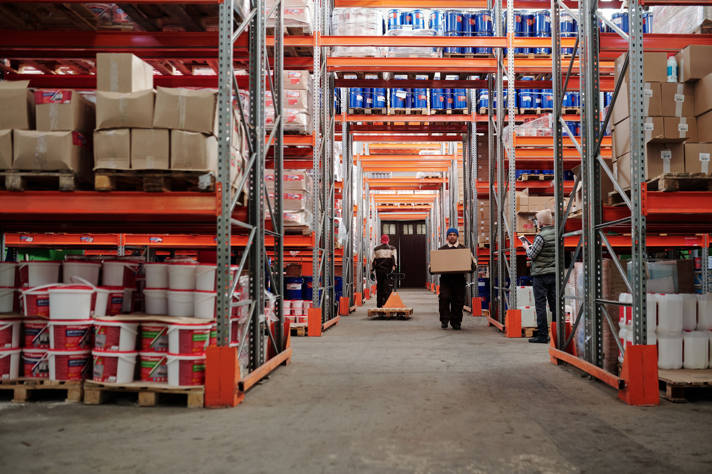

Supply Chain
Risk Governance
Most supply chain risk programmes are reactive — they respond to events after they occur. We build the visibility, scenario frameworks, and decision protocols that allow organisations to move first. Multi-tier supplier mapping, geopolitical exposure scoring, and real-time exception management — designed for the complexity of the GCC–India corridor.
Multi-tier Visibility
Mapping supplier dependencies beyond tier-1 to expose concentration risks that are invisible in standard reporting.
Scenario Modelling
Pre-built response playbooks for disruption scenarios — before the disruption forces an improvised response.
Geopolitical Risk Scoring
Country and corridor-level exposure assessment with continuous monitoring against predefined thresholds.
Exception Management
Alert architecture and decision protocols that route the right signal to the right person in time to act.
Procurement
Strategy
Procurement that is only measured on savings is optimised for the wrong outcome. It accumulates resilience risk that surfaces badly during disruption. We design procurement strategy that delivers cost efficiency and supply continuity — category by category, with full spend visibility and supplier intelligence built in.
Spend Analysis
Full spend visibility across categories, suppliers, and geographies — the foundation every other improvement is built on.
Category Strategy
Category-by-category approach that distinguishes strategic sourcing from commodity buying and manages each appropriately.
Supplier Intelligence
Financial health, performance, and risk monitoring — operational signals, not annual review questionnaires.
Contract Governance
Contract structures that allocate risk correctly and the governance to enforce them when conditions change.
AI & Digital
Transformation
Most AI initiatives in supply chain stop at the pilot. The gap between a proof of concept and production deployment is where organisations lose momentum and investment. We bridge that gap — designing the control tower architecture, AI governance, and change management that takes AI from demonstration to operational impact.
Control Tower Design
End-to-end visibility architecture with the alert logic and escalation pathways that make it operationally useful.
Demand Sensing
AI-driven demand signal architecture — moving beyond statistical forecasting to real-time market signal integration.
AI Governance
Frameworks for responsible AI deployment: model monitoring, bias controls, explainability, and human-in-the-loop design.
Technology Selection
Vendor-independent technology evaluation grounded in operational reality — not vendor pitch decks or analyst rankings.
Carbon & Trade
Compliance
CBAM is no longer a policy discussion — it is a financial line item for every GCC and Indian exporter to EU markets. The cost arrives whether or not you have a strategy for it. We quantify the liability, identify the product-level exposure, and build the compliance infrastructure before the EU enforcement phase makes it urgent.
CBAM Liability Quantification
Product-level carbon cost calculation for steel, aluminium, fertilisers, and other CBAM-covered goods — factored into trade P&L.
Carbon Cost Restructuring
Sourcing and manufacturing decisions reframed around carbon cost — turning compliance into a competitive input.
Compliance Infrastructure
Embedded reporting processes and data flows that meet EU declarant requirements without creating a separate compliance bureaucracy.
CBAM Calculator
Use our free tool to estimate your CBAM exposure by product and volume before committing to a full assessment.
War Risk &
Marine Advisory
The Red Sea disruption made freight route risk a boardroom topic. But route vulnerability, war risk insurance, and force majeure contract exposure require sustained intelligence — not a one-time review. We provide continuous monitoring, routing contingency architecture, and the contract governance that determines who carries cost when something goes wrong.
Route Vulnerability Assessment
Red Sea, Hormuz, Malacca — disruption probability framing for the specific corridors your cargo moves through.
Routing Contingency Design
Alternative routing options with full cost and lead time impact understood before disruption forces the decision.
Marine Insurance Strategy
War risk premium optimisation, coverage gap identification, and insurer negotiation aligned to your actual cargo profile.
Contract Position Management
Force majeure clauses, surcharge mechanisms, and liability allocation — reviewed against current risk conditions, not standard templates.
Commodity Market
Intelligence
Commodity trading operates on information asymmetry. Price signals, trade corridor economics, geopolitical disruption risk, and now carbon cost all need to be integrated into a single trading view. We provide the market intelligence and risk frameworks that bring these inputs together — grounded in 20 years of direct commodity market operating experience.
Price Risk Intelligence
Steel, aluminium, copper, crude, iron ore — price intelligence embedded in trade decisions, not delivered separately via market reports.
Trade Corridor Economics
GCC–India–EU corridor mapping with freight cost, duty, and carbon cost framing — total landed cost per route.
Hedging Strategy
Hedging approaches calibrated to your actual exposure profile — not generic financial hedging frameworks.
Sourcing Intelligence
Alternative supplier identification in new geographies with full origin risk, quality, and logistics cost framing.
Senior advisory from day one.
No juniors on your engagement.
We take a limited number of mandates at any time to ensure the principal stays on the work.
Request a Diagnostic